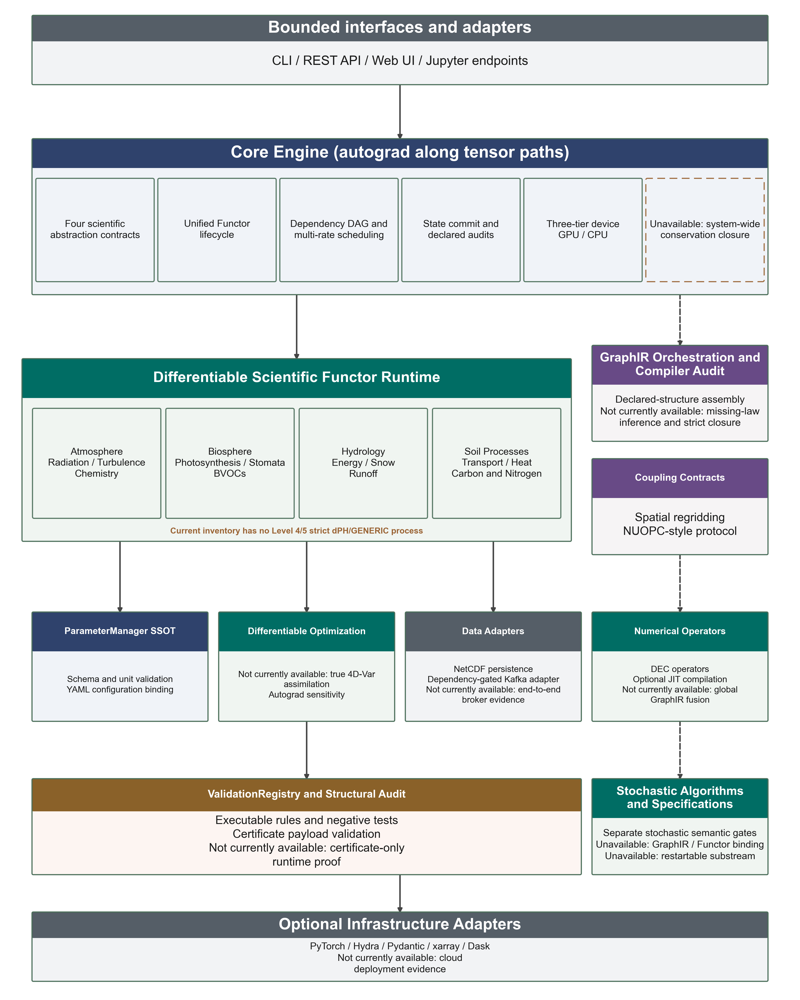

系统架构
范围与架构契约
可重组生态系统集成耦合库（Recomposable Ecosystem Library for Integrated Coupling, RELIC）是基于 PyTorch 张量构建的生物地球化学模拟可组合框架。梯度可沿实际执行的张量路径获取；边界裁剪、事件触发、速率组与自适应步长决策以及外部 I/O 均为不可微边界。它作为共享运行时所有者下相互协作的 Functor 系统运行，绝非单一的单体模型。软件包架构遵循四项准则：
新增 capability 前，优先复用 canonical owner；
通过已声明的契约组合过程，禁止直接进行 Functor 到 Functor 的调用；
通过现有 manager 管理状态、参数、单位和设备选择；并且
区分结构性证据与实际执行的科学行为。
软件包版本即公开架构版本。GraphIR schema version 等子系统 schema version 只描述对应子系统。
架构能力图


RELIC 能力图。可执行核心是本指南所述的 Functor、StateManager、参数、编排与验证路径；梯度可沿其张量路径获得，但不会穿过裁剪、事件或步长控制决策。
本图是 capability map，并不表示每个 RELIC 安装都启用了所有可选 interface、streaming backend、coupling adapter 或部署依赖。下文的 canonical owner 与 runtime 边界决定配置后的 RELIC 环境实际启用哪些能力。
具体而言，图中的 Strict IPHS 标签标示目标能力边界。在本指南记录的当前清单中，四个规范桥接族共注册 90 个唯一的具体科学 Functor 类（BiologicalProcessFunctor：37，TransportMechanismFunctor：27，PhysicalFieldFunctor：14，ScaleCouplingFunctor：12；未认证数为 0），由 92 份 YAML 证书支撑。每个具体类均持有一份主证书，90 个类在 Level 0 至 Level 5 上的分布为 4 / 15 / 39 / 32 / 0 / 0：即 4 个不可用的 Level 0 边界与分布在 Level 1 至 Level 3 的 86 个可执行类（互连端口哈密顿系统（Interconnected Port-Hamiltonian System, IPHS）兼容、IPHS 封装或 IPHS 结构化）。Level 0 条目属于故障封闭（fail-closed）边界，不可作为可执行科学过程调用。
另有两份次级证书各自覆盖一种由 constructor_selection 字段命名的构造配置，使 92 份证书在 Level 0 至 Level 5 上的总计分布达到 4 / 15 / 39 / 32 / 1 / 1：Level 4 的 FickianDiffusion(strict_runtime_point=True, spatial_dims=1)（严格耗散端口哈密顿系统，{strict_runtime_point: true, spatial_dims: 1}）以及 Level 5 的 ChemistryFunctor(physical_boundary="closed_constant_volume")（严格广义非平衡可逆-不可逆耦合方程（General Equation for Non-Equilibrium Reversible-Irreversible Coupling, GENERIC），{physical_boundary: closed_constant_volume}）。IPHSEquivalenceCertificate 仅在同时附带受治理且已提交步的运行时点审计时才接受其中任一配置；缺少该审计时，证书报告 process_bound_runtime_unavailable。仅这两种配置在其声明域内可称为严格形式。两个类的主证书仍为 Level 3，这两个类的其他所有配置也保持 Level 3。
静态概览图中的两个随机过程状态徽标（stochastic_graphir_binding 与 restartable_substream）同样对应早期快照。在当前代码树中，GraphIR 已绑定两个已认证的 Level 2（[I]）随机 Functor（OrnsteinUhlenbeckTemperatureFunctor 与 MarkedPoissonRainfallFunctor），并通过 FunctorSubstreamMixin 支持确定性的单 Functor 子流检查点保存与重启重放。相比之下，公开优化模型求值执行仍处于 [N]（runtime_unbound），relic.optimization.assimilation 中的 FourDVar 仍是未实现的 [N] 框架外壳，不含伴随模型。
软件包职责归属与七层架构映射
relic\ 软件包由 16 个顶层子包组成，包含 594 个子包 .py 文件（含 relic\__init__.py 共 595 个 Python 文件）与 316,129 行 Python 代码。对这 16 个子包的静态导入分析共记录 73 对有向跨包依赖边、973 条跨包导入语句，以及受分层依赖规则治理的 11 对双向包依赖。
区域 |
规范职责 |
|---|---|
|
科学抽象、Functor lifecycle、simulator、状态管理、dependency graph 和 device policy |
|
具体的大气圈、生物圈、水圈、土壤圈、输运和同位素过程 |
|
|
|
变量 owner、writer 权限、alias、更新语义和守恒域契约 |
|
GraphIR、typed port、结构验证、编译、execution plan 和图执行 |
|
数值 solver、DEC/IPHS operator 和计算 backend |
|
内部、外部、尺度、protocol 和 C ABI coupling |
|
I/O、标准、质量控制、流式处理和数据变换 |
|
校准、同化、敏感性分析与不确定性算法组件（公开模型执行路径处于 |
|
共享的验证模型、规则、守恒检查和跨域检查 |
|
面向 CLI、API、Web 和 Notebook 的接口 |
|
基于 Python 和 manifest 的 extension 发现与加载 |
relic\models\、relic\monitoring\、relic\stochastic\ 和 relic\utils\ 提供边界明确的支持服务。它们不会替代 simulator 或上述任何 manager。
在这 16 个子包之上，数学与运行时架构划分为七个层次外加一个正交控制平面：
层次 |
数学与运行时职责 |
规范所有者 |
状态 |
|---|---|---|---|
|
参数空间、变量契约、单位、量纲、支撑域与日历规则 |
|
|
|
已声明的依赖图、类型化 |
|
|
|
提供方标识摘要、不可变 |
|
|
|
封装核函数 |
|
|
|
按组调用执行的 |
|
|
|
物理交换账本、离散外微分（Discrete Exterior Calculus, DEC）上链、 |
|
|
|
带指纹的审计包、声明溯源记录与验证脚本 |
|
|
|
提供方生命周期凭据、设备栅栏、分布式协调，以及 C ABI |
|
|
四类科学抽象
每个可执行科学过程都声明一个主要科学契约：
抽象契约 |
含义 |
Bridge Class 系列 |
|---|---|---|
|
具有物理语义的空间场或环境场 |
|
|
生物或生物地球化学转化 |
|
|
物质、能量或 tracer 的输运 |
|
|
在已声明尺度之间进行映射或聚合 |
|

必须遵循的 lifecycle chain 为：
Scientific abstraction
-> canonical Bridge Class
-> FunctorBase and torch.nn.Module
-> parameter-system-backed values
-> RELICSimulator registration
-> dependency-resolved execution group
-> StateManager.apply_updates(...)
-> diagnostics and provenance
Bridge Class 将科学接口接入系统 lifecycle，但不会免除抽象层定义的守恒、梯度、metadata 或单位义务。
Functor lifecycle 与 metadata
FunctorBase 负责参数 namespace 解析、metadata、设备迁移、forward 执行 hook、diagnostic 和局部守恒集成。具体 Functor 实现 forward(state, time, dt, **kwargs) 并返回已声明的更新。simulator 调用 Functor 对象，不会绕过 __call__() lifecycle。
FunctorMetadata 标识输入、输出、依赖、execution stage、spatial scale、variable kind、参考文献、方程、单位和守恒量。空的输入与输出声明会降低可审计性。注册时会检测同一非 diagnostic 输出的竞争 writer，并可在 strict dependency mode 下拒绝注册。
变量角色与状态归属
框架区分五类变量角色：
角色 |
Runtime 含义 |
|---|---|
|
通过 |
|
用于产生状态更新的速率或传输量 |
|
由外部提供的驱动量 |
|
通过 |
|
只读的报告量 |

启用契约时，ContractRegistry 提供 alias、owner、获准 writer、增量语义和守恒域成员关系。StateManager.apply_updates(...) 是受控提交路径，负责解析 alias、授权写入、应用更新语义、维护元素 ledger、记录 provenance，并回滚失败的事务性提交。
参数、常量、单位与时间
科学 Functor 仅通过 self.get_parameter_value(...) 获取运行时参数值。非 Functor 基础设施使用 get_global_manager().get(...)。参数值、单位、dtype、上下界、参考文献、溯源信息、标签与梯度设置均归入参数 YAML 数据库。在默认运行时设置下，UnifiedParameterManager 加载 4,643 个有效参数（其中 810 个设置 requires_grad=True），由 138 个 YAML 文件支撑（基础 relic 层含 134 个文件、4,642 个叶条目，calibrated 层含 4 个文件、109 个叶条目，合计 4,751 个 YAML 叶条目）。
物理常数仅由 relic\parameters\database\relic\physical\constants.yaml 管理，并通过 get_physical_constant(...) 访问。时间换算值通过 UnifiedParameterManager 解析；derived fallback 可以使用已解析的值。科学模块不得定义重复的常数或 unit registry。
from relic.core.device_policy import resolve_device
from relic.parameters import get_global_manager
from relic.utils.physical_constants import get_physical_constant
manager = get_global_manager()
kb = get_physical_constant("boltzmann_constant")
dev = resolve_device(explicit_device="cpu")
assert len(manager.list()) >= 4600
assert float(kb) > 0.0
assert dev.type == "cpu"
Simulator、执行频率与 device policy
RELICSimulator 负责注册、依赖排序、fast/medium/slow execution group、时间推进、输出存储、checkpoint 集成、provenance 和 diagnostic。
Execution group |
触发条件 |
有效 |
|---|---|---|
|
每个全局时间步 |
当前步长 |
|
已配置的间隔或事件 |
自上次 medium 执行以来的时间 |
|
已配置的间隔、日历边界或事件 |
自上次 slow 执行以来的时间 |
Functor 的执行组在注册时按唯一优先链确定：先看 execution_group 参数，再看 Functor 自身的 execution_group 属性，再比较其特征时间与参数数据库中的两个分类阈值（computation.scheduling.fast_group_max_characteristic_days 和 computation.scheduling.medium_group_max_characteristic_days；当前配置示例为 1 天和 10 天），之后看时间尺度、process_groups 配置项，最后在完全未声明时采用 fast。即使较高优先规则已作出决定，也要检查所有声明：组名无效、特征时间不是有限且非负的天数、时间尺度名无对应尺度（构建 Functor 元数据时就会拒绝），或 process_groups 与属性、特征时间或时间尺度不一致，都会在注册任何内容之前抛出 ValueError。要覆盖 process_groups 配置项，应通过参数传入执行组。阈值只用于过程分类，不是执行间隔。中速间隔为 medium_interval_seconds；慢速间隔为 slow_interval_seconds，未设置该键时按配置历法的月份执行。某个 Functor 请求引导执行或已注册事件触发器触发时，中速或慢速组也会执行；该组一旦执行，引导请求即被消耗。每组每步最多执行一次：若一步跨过多个边界，则只针对全部已过去区间执行一次。
每次调用都将覆盖区间的起始时间，加上子步偏移，作为 time 参数。快速组从步骤起点开始；Strang 模式的后半步从半步之后开始；中速或慢速组从上次执行时刻开始。例如，上次在 0 s 执行的中速组，在 1 s 到 2 s 的步骤中接收 time = 0 和 dt = 2。过程如何在该区间内采样随时间变化的强迫，仍由过程自身决定。
自适应选项对快速组已提交的状态变化计算缩放 RMS 指标。它是控制启发式方法，不是 Richardson 外推或局部截断误差估计。首次尝试被拒绝时会回滚，且仅在其步长大于最小步长时，才在更短区间上最多重试一次；步长等于或小于最小步长的尝试会被接受并记录警告。只有快速组更新进入指标。重试结果不经第二次检查就接受，因此已接受步骤仍可能超出容差。
RELICSimulator(None) 会将 None 规范化为空配置 {}，在此配置下 enable_auto_scale 默认设为 False。设备选择集中由 relic\core\device_policy.py 管理。注册前的构造阶段会将每个 FunctorBase 实例置于 CPU 占位设备上，直至模拟器注册阶段将其迁移至解析后的运行时设备。resolve_device(...) 按顺序评估七个优先级层：
explicit_device参数（值为"auto"或"default"时除外）；配置中的单 Functor 或单模块覆盖项（位于根级、
simulator或runtime节的device_overrides与module_device_overrides）；来自
set_device_overrides(...)的运行时覆盖项与来自RELIC_DEVICE_OVERRIDES_JSON的环境变量覆盖项；配置中的全局
device（位于根级、simulator或runtime节）；来自
set_default_device(...)的进程级默认设备；RELIC_DEFAULT_DEVICE环境变量；以及distributed=True时的分布式 CUDA 优先选择（不可用时回退至 CPU），或调用方传入的default（默认为"cpu"）。
无效的覆盖映射会抛出 TypeError，无法解析的设备条目会抛出 RuntimeError。分布式与 auto 执行模式优先选择 CUDA，并在 CUDA 不可用时回退至 CPU（除非 require_gpu=True 要求直接报错）；若显式设置的 enable_distributed: true 配置无法满足，则抛出 RuntimeError。科学模块不得在 relic\core\device_policy.py 之外零散检查 CUDA 可用性。
结构化科学层
RELIC 通过 relic\computation\operators\dec\ 和 relic\computation\operators\iphs.py 复用 DEC 与 IPHS 结构。结构声明可以建立 typed cochain 关系、选定的拓扑恒等式、operator 对称性或反对称性，以及已声明的 port 关系。
这些结构本身不能证明存在可执行的反应定律、闭合的物质 ledger、能量或熵闭合，也不能证明实现了 strict GENERIC。声称采用结构化执行的反应过程，必须在 runtime path 中计算已声明的 stoichiometric operator 和 rate law。闭合 ledger 需要运行时 conservation matrix；开放 ledger 需要显式 route。
IPHSEquivalenceCertificate 是 IPHS standardization level 的唯一 owner。低于 strict IPHS 的 level 不能仅因暴露了兼容字段或 diagnostic 就被描述为 strict。
端到端装配与执行
RELIC 将模型声明、结构编译、数值执行和状态提交分开。该分离具有实际执行含义：某一阶段通过，并不表示其后的阶段也已通过。
GraphExecutor 构建计划中的 Functor，并在每次已准备的运行中将它们注册到一个 RELICSimulator 中。模拟器的 step(...) 是唯一的科学状态推进；GraphExecutor 自身从不进行状态提交。三种图相互分离：声明图（GraphIR 链接与 Functor 依赖）、模拟器使用的解析执行顺序，以及由储量和通量构成的物理交换图。执行边只决定计算的先后顺序，并不建立守恒的转移。
图装配路径为
compile_graph(...) 只能在所选严格性策略下继续；阻断性验证问题不会被转换为可执行的科学结果。单次 Functor 调用的运行时路径可写为
随后，每个组调用 \(g\)（fast 组或每个 Strang 子执行，然后是到期的 medium 与 slow 组）各进行一次受治理的状态提交，全部位于同一个步事务之内
其中 \(\theta_i\) 由 UnifiedParameterManager 解析，\(x\) 是 Functor \(i\) 读取的已提交或临时状态，\(s_g\) 是组调用 \(g\) 所覆盖区间的起始时间，\(\mathcal{A}_g\) 是组调用 \(g\) 根据依赖和执行速率选择的活跃 Functor 集合，\(G\) 为该步骤中的组调用次数，\(\Gamma\) 包含变量契约、更新模式、写入权限、单位和守恒域归属。快速组的区间 \(h_g\) 为步长（Strang 子执行的半步或整步），中速或慢速组则采用 \(t_{\mathrm{future}}-t_{\mathrm{last}}\)。起点 \(s_g\) 对快速组、Strang 的前半步和中间整步取步骤起点 \(t_n\)；后半步取 \(t_n+h/2\)；中速或慢速组取 \(t_{\mathrm{last}}\)。具有 \(m\) 个子步的 Functor 会在时刻 \(s_g+k\,h_g/m\)、\(k=0,\ldots,m-1\) 被调用 \(m\) 次，每次步长为 \(h_g/m\)。整个步骤统一接受或回滚：步骤后续阶段失败时，会恢复该步骤的所有组提交。提交算子不是无条件求和：REPLACE、ACCUMULATE、通量积分、别名、投影以及拒绝或回滚都保留各自声明的语义。
阶段 |
规范 owner |
输入 |
输出 |
阻断条件 |
|---|---|---|---|---|
参数与契约加载 |
|
参数 YAML 与变量契约 |
类型化数值、metadata、alias、writer 与账本规则 |
缺少必需值、单位或 bounds 非法、契约不一致 |
图声明 |
|
|
声明式模型图 |
声明格式错误或相互矛盾 |
定义与 port 绑定 |
|
类类型与变量 identity |
|
类未知、port 缺失、单位或量纲不匹配 |
结构验证 |
|
图、registry、SSOT catalog 与 assertion payload |
|
阻断性的图、依赖、port、单位、拓扑或科学 assertion 问题 |
编译 |
|
已验证的图与已注册定义 |
带 seal 的 |
adapter、定义或拓扑未解析，或编译器不变量不成立 |
注册与调度 |
|
Functor 实例与执行计划 |
已分配设备的 fast/medium/slow 执行顺序 |
writer 重复、必需依赖未解析或 device policy 非法 |
Functor 执行 |
|
当前或 provisional state、时间、 |
状态提议（ |
输入非法、执行失败、局部守恒失败或验证失败 |
事务性状态提交 |
|
数值更新、source map、increment metadata、契约与 |
已提交状态、provenance 与守恒账本 |
未授权写入、更新不兼容、结果非有限、约束失败或触发回滚 |
持久化与发布输出 |
现有 checkpoint 与 data-writer owner |
已提交状态与运行 identity |
checkpoint receipt、数据工件、metadata 与哈希 |
checkpoint 不兼容、输出契约不完整或写入失败 |
一次组调用内，模拟器构建临时状态，使同次调用中较晚执行的 Functor（例如已声明的下游依赖）能够使用上游结果。该临时状态不是独立的状态所有者；权威状态只通过该组调用结束时的 StateManager.apply_updates(...) 改变。同一步骤后续阶段失败时，会恢复该步骤的全部组提交。在 strang 模式下，每次子执行都是独立的组调用，因此下游 Functor 从上游先前子执行已提交的状态读取结果，而不是从共享临时状态读取。声明 subprocess_outputs 的 Functor 从依赖输出映射接收上游返回值；快速组组合的全部 2n - 1 次子执行共享该映射。读到的是上游最近一次先行子执行的输出，即 [t, t + h/2] 上的首个半步结果。同一组合也按返回输出的合并规则，合并每个 Functor 各次子执行的诊断量；StateManager 存储合并值，因此步骤存储的诊断量与返回值一致。
连接与守恒规则
执行依赖是一项已声明的顺序与数据契约。当边 \(i\rightarrow j\) 生效时，\(j\) 只能读取 \(i\) 已声明且在 identity、单位、shape、support 和时间语义上兼容的输出。具体规则如下：
具体 Functor 不直接调用另一个具体 Functor。组合关系通过 metadata、GraphIR link、port、adapter 和 simulator dependency graph 表达。
参数从
UnifiedParameterManager流入 Functor；GraphIR 和StateManager不成为第二参数存储。Diagnostic 是报告输出。除非独立变量契约明确授权，否则 diagnostic 不获得预报状态所有权。
单位、support、时间或空间尺度变换需要已声明的可执行 adapter。只修改 metadata 标签不构成转换。
Functor 级守恒检查仅证明其已声明的局部账本或本构关系。系统级守恒还要求端口兼容、支撑域与单位一致，并计入相应的储量变化。
对于已声明储量 \(S\)，单步账本形式为
只有当每一项都映射到相同物理量、单位、空间 support 和时间区间后，该 residual 才有意义。结构 residual 为零、进程成功退出，或某个闭合反应账本满足 C N = 0，均不能单独证明全系统质量、能量、熵或 strict GENERIC 闭合。详细方程和适用条件由理论指南维护；类级 port 与运行方程由科学类参考维护。